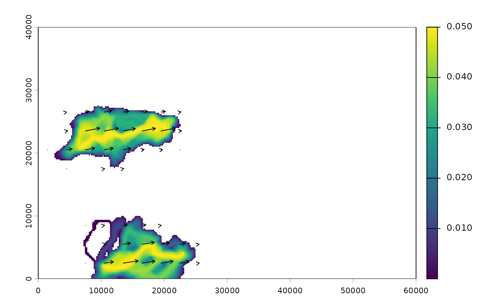

Summarizes a map from map_pairwise() on a coarser grid, for drawing
arrows. Direction follows the summed vectors. By default length does too,
so arrows are long where corridors agree on a direction and shrink where
opposing flows cancel; length_by = "magnitude" scales them by the mean
size of change instead.
Arguments
- map
A directional map from
map_pairwise().- cells
Grid size, in cells of
map.- length
Length of the longest arrow, in map units. Defaults to about 80% of a grid cell.
- length_by
"net"(length of the summed vector) or"magnitude"(mean size of change in the grid cell).- scale
"linear"lengths, or"sqrt"to compress the range so a few very large changes do not shrink every other arrow to a dot.- min_quantile
Drop arrows in the weakest cells (below this quantile of magnitude).
- min_length
Shortest arrow, as a share of
length. With the default of 0, arrow length is proportional to magnitude, so arrows shrink to nothing where nothing changes.
Value
A data.frame with x, y, xend, yend and magnitude, ready
for ggplot2::geom_segment() or graphics::arrows().
Examples
# \donttest{
ex <- corridor_example(acc = TRUE)
v <- both_directions(data.frame(from = c("M03", "M08"), to = c("M20", "M25"), value = 0.05))
v$value[3:4] <- -0.05
m <- map_pairwise(v, ex$acc, ex$sites)
a <- shift_arrows(m, cells = 15)
terra::plot(m$value)
arrows(a$x, a$y, a$xend, a$yend, length = 0.05)
#> Warning: zero-length arrow is of indeterminate angle and so skipped
#> Warning: zero-length arrow is of indeterminate angle and so skipped
#> Warning: zero-length arrow is of indeterminate angle and so skipped
#> Warning: zero-length arrow is of indeterminate angle and so skipped
#> Warning: zero-length arrow is of indeterminate angle and so skipped
#> Warning: zero-length arrow is of indeterminate angle and so skipped

# }